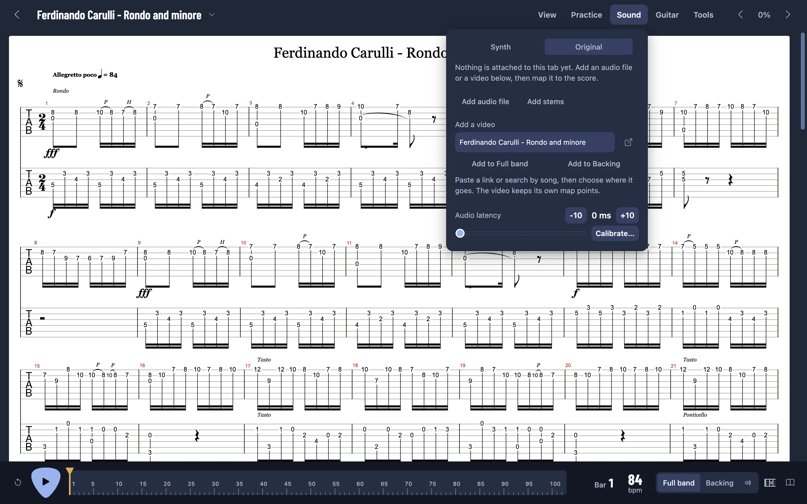

Original recording
Sync a tab to a recording, and the cursor follows the music. You can use a YouTube video or an audio file on your device.

Add a recording
- In the dock, select Original. If you haven't added a recording, its settings open.
- Under Source, select YouTube or Local audio.
- For YouTube, enter a link or video ID, or search by song. A link or ID is added as you entered it. A search adds the first match. Select Add.
- For a local file, select Add audio file and choose the file.
The list Videos for this recording can hold several videos. Each video keeps its own sync points. Audio files stay on your device. They're included in backups and cloud sync unless you turn that off.
Sync the recording by tapping
- Select Tap to Sync.
- Play the recording. Tap each bar of the tab when you hear it.
After you sync, the cursor follows the recording through tempo changes. The metronome and count-in follow it too. Syncing works for Guitar Pro, PDF and text tabs.
Calibrate tap offset measures how long you take to tap after you hear a sound, and removes that delay from every tap.
Correct sync points
Select Sync Points to edit the points you tapped. You can:
- Tap again over a range of bars without redoing the rest.
- Nudge a point.
- Play two seconds around a point to check it.
- Move a point to the nearest sound in the recording.
- Delete a point.
To reuse sync points, select Copy sync points from another video or file… or Copy sync points from another tab…. MajesticTab copies the times as they are. Use this for the same recording, and then adjust the points.
Add a backing track
Switch the panel from Recording to Backing to attach a separate backing track to the same tab. Sync it the same way. Then you can switch between the original recording and the backing track.
Change the speed
The original recording has its own speed options: 50%, 75%, 100% and 125%.
Use a recording in a Jam
Guests don't hear a local audio file from the host. They follow the host's YouTube video or the synth. See Jam sessions.